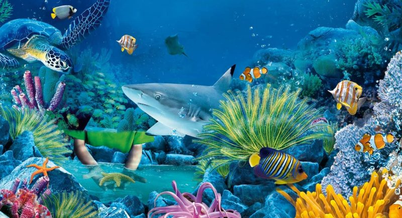
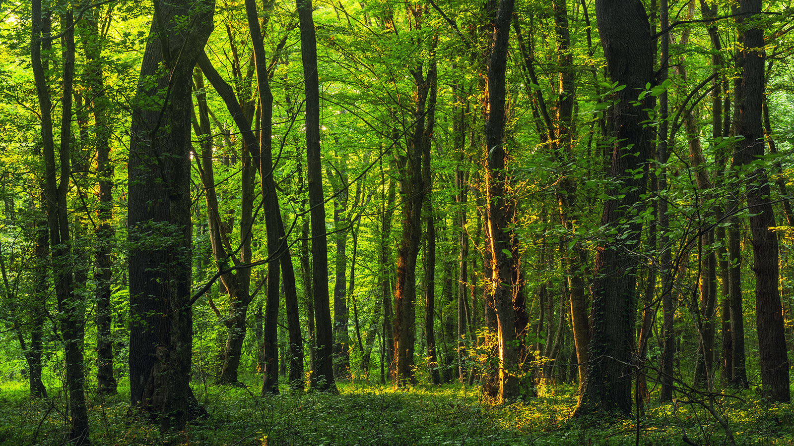
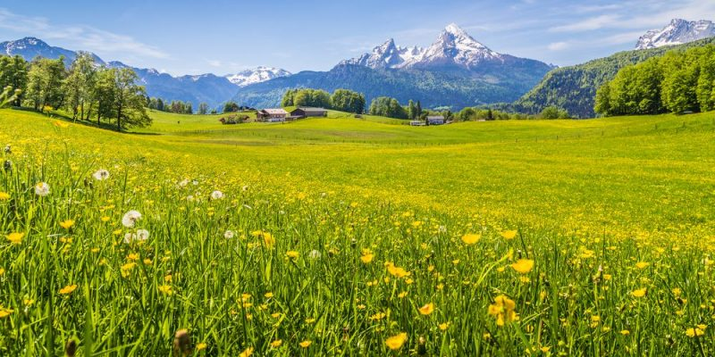
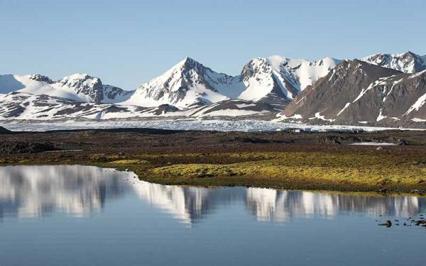

Ecosistemas Acuáticos

Marino
Océanos, mares y arrecifes que cubren más del 70% de la superficie terrestre. Son fundamentales para el clima y la vida.

Agua dulce
Ríos, lagos y humedales albergan especies únicas y proveen agua potable y alimentos a millones de personas.
Ecosistemas Terrestres

Bosque
Desde selvas tropicales hasta bosques templados y boreales, son el hogar de gran parte de la biodiversidad terrestre.

Desierto
Áreas áridas con lluvias escasas, adaptadas a condiciones extremas. Pueden ser calientes como el Sahara o fríos como la Antártida.

Pradera
Llanuras cubiertas de hierba, como las sabanas africanas y las pampas sudamericanas. Importantes para la agricultura y fauna silvestre.

Tundra
Zonas frías y sin árboles, como el Ártico. Con suelos congelados (permafrost) y especies adaptadas al frío extremo.